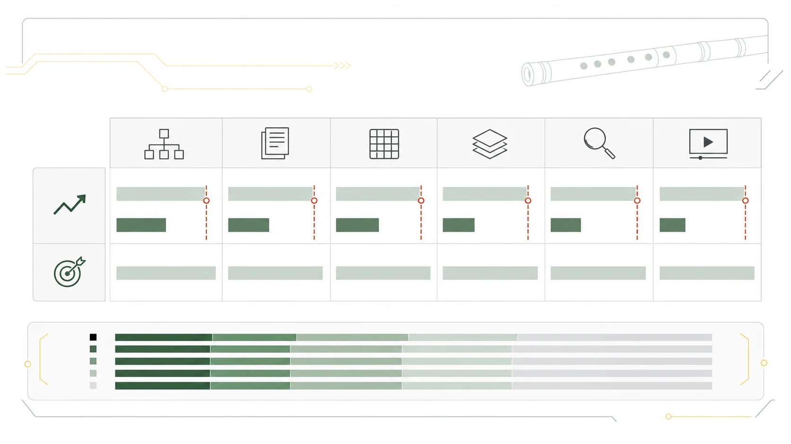

收錄範圍與限制
知識庫，還有哪些未備？
站內覆蓋指標為 3.18/10，按預設數量及結構規則計算。它不是學術評分，更不代表資料正確率；文章仍須逐項核對，部分來源之間亦可能互相引用。
L0 只有名稱與分類；L1 有書目線索；L2 有正文及核對紀錄；L3 加入練習或比較；L4 須外部專家覆核。
L0：86L1：152L2：143L3：10L4：0
尚待補充的內容
14 項
不重複可靠來源
76 / 450
16.9%全文或完整記錄
9 / 100
9.0%至少兩個來源的細分主題
78 / 150
52.0%核心主題達五個來源
14 / 60
23.3%已記錄核對的陳述
389 / 1000
38.9%L2 或以上頁面
153 / 350
43.7%L4 研究級頁面
0 / 60
0.0%完整人物頁
10 / 60
16.7%完整曲目頁
10 / 80
12.5%完整技法頁
15 / 35
42.9%完整樂器頁
11 / 20
55.0%教學單元
5 / 25
20.0%已核實影音來源
1 / 100
1.0%已核實影音時間段
2 / 500
0.4%首批專題規劃
72 已達 L2 · 0 已有來源 · 0 待執行
查看本批 11 個規劃頁面
- 樂器分類總覽 L2
- 歷史與文化總覽 L2
- 地域與流派總覽 L2
- 樂器結構與製作總覽 L2
- 聲學與音律總覽 L2
- 指法與演奏技法總覽 L3
- 教學與學習總覽 L3
- 曲目、作曲及演奏實踐總覽 L2
- 人物與機構總覽 L2
- 維修、保養及健康總覽 L2
- 錄音、數碼化及人工智能總覽 L2
查看本批 12 個規劃頁面
- 竹笛是甚麼：形制、聲音與用途 L2
- 笛、橫笛、竹笛與相關名稱辨析 L2
- 竹笛結構完整圖解 L2
- 笛膜：材料、貼法、聲學與故障 L2
- 曲笛、梆笛、新笛與大笛比較 L2
- 從考古吹管樂器到現代竹笛：證據與限制 L2
- 20 世紀竹笛獨奏化與專業教育 L2
- 北派、南派及當代風格分類 L2
- 調性、筒音與實際音高 L2
- 音域、移調與簡譜／五線譜 L2
- 選購、日常保養與季節管理 L2
- 如何閱讀本知識庫的證據及核實狀態 L2
查看本批 12 個規劃頁面
- 發音、口風與氣流方向 L2
- 長音 L2
- 單吐 L3
- 雙吐 L2
- 三吐 L2
- 花舌 L2
- 打音、疊音與贈音 L2
- 顫音 L2
- 滑音與抹音 L2
- 半孔與叉指 L2
- 氣震音 L2
- 循環換氣 L3
查看本批 10 個規劃頁面
- 竹笛總論 L2
- 曲笛 L2
- 梆笛 L2
- 新笛 L2
- 大笛 L2
- 八孔笛 L2
- 十孔笛 L2
- 十一孔笛 L2
- 加鍵笛 L2
- 竹笛與簫、篪、長笛比較 L2
查看本批 10 個規劃頁面
- 馮子存 L2
- 劉管樂 L2
- 陸春齡 L2
- 趙松庭 L2
- 俞遜發 L2
- 曾永清 L2
- 張維良 L2
- 唐俊喬 L2
- 譚寶碩 L2
- 陳中申 L2
查看本批 10 個規劃頁面
- 《喜相逢》 L2
- 《五梆子》 L2
- 《鷓鴣飛》 L2
- 《姑蘇行》 L2
- 《三五七》 L2
- 《早晨》 L2
- 《蔭中鳥》 L2
- 《牧民新歌》 L2
- 《揚鞭催馬運糧忙》 L2
- 《帕米爾的春天》 L2
查看本批 5 個規劃頁面
- 第一次接觸竹笛 L3
- 首 30 日練習路線 L3
- 初級學習路徑 L3
- 中級學習路徑 L3
- 常見錯誤診斷 L3
查看本批 2 個規劃頁面
- 來源、權利與引用政策 L2
- 編輯、同行覆核及更正政策 L2
主題插圖（非教學圖）
